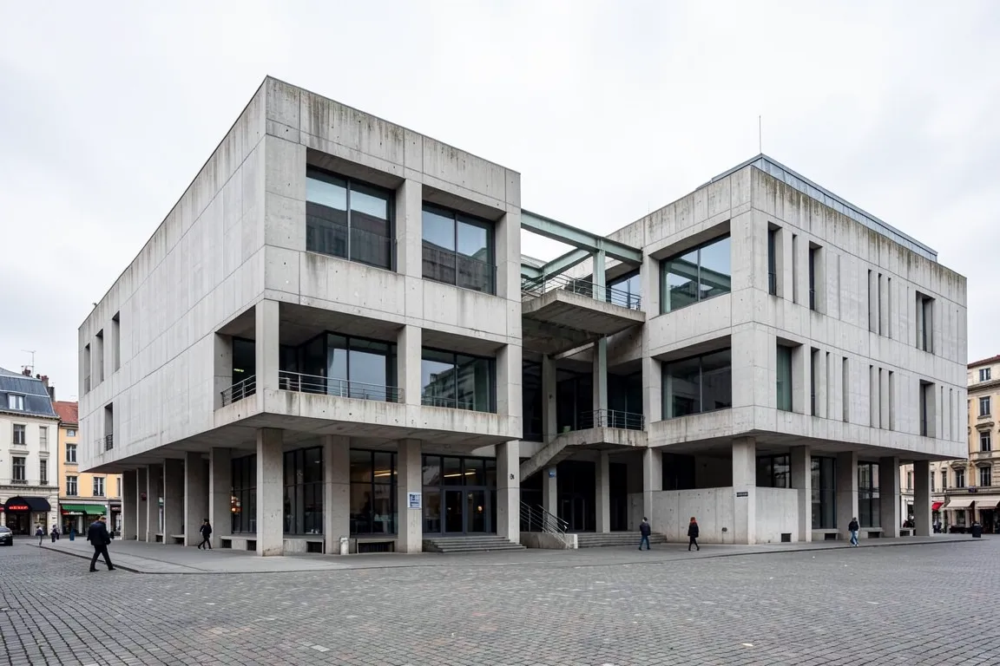

architecture · 1950s–1970s · also: New Brutalism, Béton brut
Heavy masses of board-marked concrete with the structure, the services and the circulation shown on the outside. It grew from Le Corbusier's late work and from British post-war housing, and it built the universities and town halls of the welfare state.

Core thesis
A building is honest when its material, its structure and its use are legible from the street.
Design principles
Leave the primary material unfinished: cast concrete keeps the marks of its timber formwork, and brick stays unrendered.
Show the structure: express frames, cross-walls, beams and cantilevers as the main image of the facade.
Compose with a few large repeated masses, and let each mass state one function such as a stair tower or an auditorium.
Set windows deep in the wall, at least 300mm behind the face, so that shadow and not glass draws the elevation.
Put services, stair cores and walkways on the outside of the volume where a visitor can read them.
Use one dominant material for more than 70% of the visible surface.
Anti-patterns
Smooth render, paint or cladding panels over the concrete
Curtain walls of flush glass that hide the floor slabs
Applied ornament, mouldings or historical motifs
Thin, light profiles that make the building look weightless
A hidden entrance or a structure that cannot be read from outside